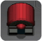
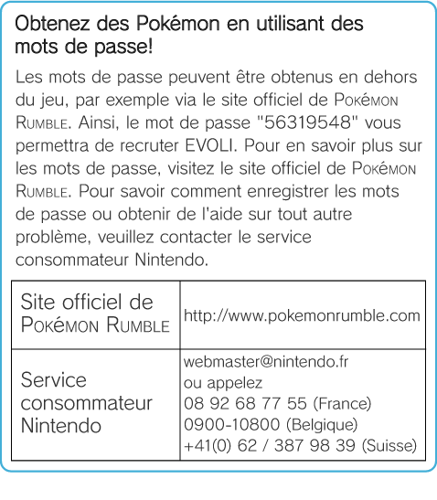
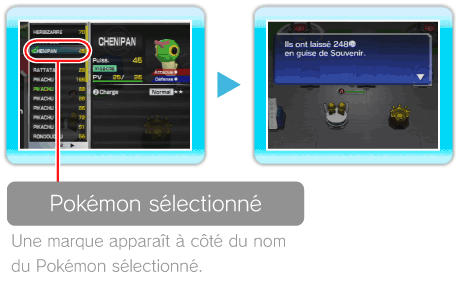
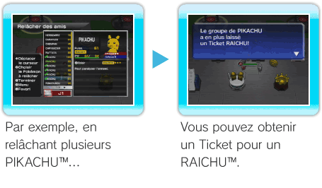
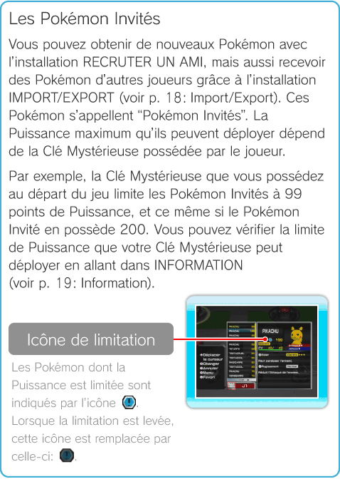

17 |
Installations relatives aux Pokémon |
 |
RECRUTER UN AMI  Il est possible de recruter un ami avec des
RECRUTER Permet de se faire de nouveaux amis Pokémon avec des Dans l’installation RECRUTER UN AMI, choisissez RECRUTER AVEC DES Si vous laissez le nouveau Pokémon à terre un certain temps sans le toucher, il disparaît. L’espèce des Pokémon et le nombre de
RECRUTER AVEC UN MOT DE PASSE Entrez un mot de passe pour recruter un nouveau Pokémon. Entrez 8 chiffres de 0 à 9 puis choisissez OK. Si vous avez entré le bon mot de passe, vous recevrez un nouvel ami Pokémon. Vous ne pouvez utiliser chaque mot de passe qu’une seule fois par sauvegarde.

RECRUTER AVEC UN TICKET Lorsque vous relâchez vos Pokémon avec l’installation RELACHER DES AMIS, il arrive que vous obteniez un Ticket avec un nom de Pokémon écrit dessus. Si vous en avez un, ce choix s’affiche. En utilisant un Ticket, vous pouvez recruter le Pokémon dont le nom est écrit dessus. Le Ticket est consommé par l’opération.
RELACHER DES AMIS
Note: le nombre de 
Les Tickets Selon la Puissance des Pokémon relâchés et leur nombre, il arrive que vous obteniez un Ticket avec un nom de Pokémon écrit dessus en plus du Souvenir. Vous pouvez l’utiliser en allant à l’installation RECRUTER UN AMI puis en sélectionnant RECRUTER AVEC UN TICKET pour obtenir le Pokémon dont le nom est écrit sur le Ticket. Note: vous ne pouvez posséder qu’un seul Ticket à la fois.
APPRENDRE CAPACITE
Les Pokémon peuvent connaître jusqu’à 2 capacités. S’ils en connaissent déjà 2, il faudra en remplacer une. ・ Plus vous progressez dans les Ligues, plus le coût en ・ Même si vous choisissez QUITTER et que vous n’avez pas appris de capacité, vous perdrez quand même des
 |
 puis validez avec
puis validez avec  . Vous pouvez en choisir plusieurs à la fois. Choisissez enfin OUI pour relâcher vos amis. En partant, le Pokémon vous laisse des
. Vous pouvez en choisir plusieurs à la fois. Choisissez enfin OUI pour relâcher vos amis. En partant, le Pokémon vous laisse des  |
 |
 |